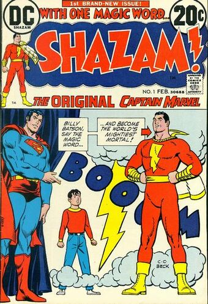

Shazam, known originally as Captain Marvel, was the creation of Bill Parker and C.C. Beck at the time Superheroes were the new hotness. A young boy by the name of Billy Batson was granted the capabilities of 6 legendary figures, and could call upon them by speaking the magic word: SHAZAM! The magic word would call down a lightning bolt to strike Billy, and transform him into the adult superhero Captain Marvel! Powered by the Wisdom of Solomon, the Strength of Hercules, the Stamina of Atlas, the Power of Zeus, the Courage of Achilles, And the Speed of Mercury, Captain Marvel makes it his duty to fight evil wherever it may appear!
Shazam Vol 1 collects issues 1-18 of DC's Shazam run, though issue 8, which is all Golden Age reprints, only has its cover included.
First things first, C.C. Beck's cartoony and colorful artstyle captures the charm and whimsy inherent to the Captain's world. Speaking of which, the stories in this volume carry massive amounts of childlike wonder and imagination (imagine a kid that was so nice, everyone couldn't help but do nice things for him when they see him, or perhaps a group of aliens that steal all the candy on Earth, of all things, or even sentient vegetables from a salad planet!)
While the new characters have their own charm, I feel the original cast from the Golden Age is woefully underutilized. This is particularly egrigious with the villains: Dr. Sivana, Ibac, and Mister Mind all appear in this volume, but King Kull, Captain Nazi, and Black Adam don't even show up once. On the heroic side of the absence spectrum, Uncle Marvel makes a small cameo in issue 1 but doesn't get a role until issue 14. I also have a minor gripe with the art of the later issues, as it mixes the cartoony Beck style with more realistically drawn art.
Yes. Even though I have some notable gripes about the 70s Shazam, I can wholeheartedly say that the charm and imagination of the Fabulous Forties Captain Marvel is alive and well in this Bronze Age revival.
 Click here to go back to the main page. Sandman Superman Green Arrow Luke Cage